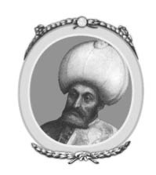
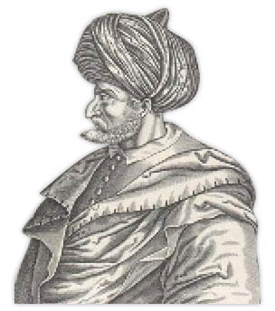

V : I. MEHMED
1413-1421

Sultan Bayezid’in ölümüyle Osmanlı İmparatorluğu’nun ortadan kalkmaya mahkum olduğu söylenebilir. Küçük Asya çoktan elinden çıkmıştı ve Timur, beylere bölgelerini geri verdi. Beyler de Timur’a bağlılık yemini etti. Diğer bölgeler ise Tatarların elindeydi. Avrupa’daki imparatorlukların Asya’dan destek almadan ayakta kalabilmeleri beklenmiyordu. Bulgaristan, Bosna ve Eflak’ın Hıristiyan nüfusu yakın zamanda tekrardan özgürlüklerini alacaklardı ve Rum İmparatorluğu’nun da kaybettiği bazı bölgelere tekrardan hakimiyet kurması an meselesiydi. Ancak Osmanlı İmparatorluğu hiç beklenmedik bir dayanma gücü gösterdi. Sadece Timur’un işgalinden kurtulmadı, aynı zamanda Bayezid’in ölümünden sonra dört oğlu arasındaki çekişmeden dolayı çıkan iç savaşı bile atlattı. On yıllık Fetret Devri meydana geldi, bu dönem boyunca tahtta hak iddia edenler arasında yıkıcı savaşlar oldu. Aralarından en güçlü ve en genç olan Mehmed’in idaresi sayesinde, hiçbir bölgeyi kaybetmeden, imparatorluk geçirdiği zorlu dönemi atlatarak gün ışığına çıktı. Timur’un yöneticileri Küçük Asya’yı tahrip ettikten sonra çekirge sürüsü gibi ayrıldı, bölgeyi çırılçıplak bıraktıktan sonra daha verimli yerler arayışına geçtiler. Orta Asya’ya geri döndüler. Tatarların yönetimindeki Küçük Asya’da hiçbir şey bırakmadılar, ne bir ordu ne de bir yönetici. Bölge Osmanlıların birbirleriyle, derebeyleri ve komşularının savaşmaları için bomboş ortada kaldı. Oraya ancak en güçlü olan yerleşecekti.
Bayezid’in altı oğlundan beşi ordusunun farklı bölümlerinin başında yer alarak Angora’da (Ankara) birlikte savaştı. Oğulları arasından Mustafa savaş sırasında katledildi, diğer oğlu Musa ise babasıyla aynı kaderi paylaştı ve esir düştü. Geri kalan üç oğlu ise kaçtı. Aralarında en büyüğü olan Süleyman, Başvezir Ali ve Hasan, ayrıca Yeniçeri ağası ile birlikte Adrianopol’ye (Edirne) gitti. Bayezid’in ölümünden sonra da kendini sultan olarak ilan etti ve imparatorluğun Avrupa bölümündeki yerlerde etkisini gösterdi. Bayezid’in daha genç olan oğlu İsa ise Bursa’ya gitti ve o da babasının tahtının sahibi olduğunu açıkladı. En genç, ancak en yetenekli oğlu Mehmed de Küçük Asya’nın kuzey doğusundaki küçük bir beylik olan Amasya’da inzivaya çekildi. Babalarının ölümünden sonra tahtta hak iddia eden üç oğlan birbirleriyle savaştı. Daha sonra dördüncü bir oğul daha aralarına katıldı. Musa, babasının cenazesini Bursa’ya getiren konvoyun başında yer almak için Timur tarafından serbest bırakıldı.

Musa Çelebi
İlk anlaşmazlık Mehmed ile İsa arasında yaşandı. Mehmed Asya’daki Osmanlı egemenliğini ikisi arasında bölüşmeyi teklif etti. İsa bunu reddederek hepsini istediğini açıkladı. Savaşı kaybetti ve Avrupa’ya Süleyman’ın yardımını istemeye gitti. Süleyman çoktan bulunduğu bölgede Osmanlı egemenliğini kurmuştu ve kardeşine destek olmak için Asya’ya kendi liderliğinde bir ordu yollayabilirdi. Mehmed, Süleyman tarafından güç bela bastırıldı. Musa’yı Boğaz’ın diğer yakasına yolladı, Süleyman’ın Avrupa’da dikkatini dağıtmak için isyan çıkardı. İstenilen tepkiyi aldılar ve Süleyman Avrupa’ya dönmek zorunda kaldı. Süleyman döndükten sonra Mehmed, İsa’yı yenmeyi başardı, İsa ortadan kayboldu ve bir daha da haber alınamadı.
Avrupa’da ise Süleyman ile Musa büyük bir anlaşmazlığa düşmüşlerdi. Süleyman aynı babası gibi bir adamdı, savaşlarda gayretli ve cesurdu; ancak o da kendini meşke, içkiye ve ahlaksızlığa verdi. Yeniçerilerin ağası, hastalık sebebiyle zaman zaman azalttığı bu ahlaksız davranışlardan vazgeçmesi için boşuna uğraşlar verdi. Ağanın bıyıklarını kılıcıyla keseceğini söyleyerek tehditler savurdu. Sıklıkla askerlerine küfür ederdi ve çok zalimce davranırdı, sonunda Yeniçeriler Süleyman’ın zalim davranışlarına, sefahat düşkünü haline ve sefere bile çıkamamasına hiddetlenerek isyan başlattılar. Hasan’ın önderliğinde öldürdüler. Daha sonra Avrupa’da egemenliğini ve sultanlığını ilan eden Musa’nın yanında yer aldılar. Sırbistan’a bir keşif seferi düzenledi, Mehmed’e yardım ederek kendisine hainlik yapıldığını düşünen Musa intikam almak için sefere çıktı. Gittiği yerde büyük zalimlikler yaptı ve Adrianopol’ye (Edirne) geri döndü. Bayezid’in ölümünden sonra Andronicus’u Rum tahtından ederek başa geçen ve Mehmed’e yardım eden Manuel’e savaş açtı.
İmparator, Mehmed’den yardım istedi. İmparatorun yardım çağrısına cevaben Mehmed, Tük ordusu ve Sırp askerleriyle beraber Boğaz’ı geçti. Hiç görülmemiş garip bir olaya sebep oldular. Bir Türk ordusu, İstanbul’u Osmanlı ordusuna karşı savundu.
En sonunda Musa İstanbul’dan geri çekildi ve Mehmed tarafından sürüldü. Sırbistan sınırlarında iki ordu karşı karşıya gelince Musa’nın askerlerinin geri çekilmesiyle savaşa meydan verilmedi. Yeniçeri Ağası Hasan, Musa’nın karşısında askerlerine seslendi:
Neden Osmanlı şehzadelerinden en erdemli ve en düzgününe geçerek taraf değiştirmekte çekiniyorsunuz? Ne kendisine, ne de başkalarına bakamayan zulüm eden bu adama neden kendinizi adıyorsunuz?
Askerlerine çekilen bu nutuğu duyan Musa, Hasan’ın yanına giderek onu katletti. Hasan’a eşlik edenlerden biri Musa’ya kılıcıyla saldırarak onu elinden yaraladı. Komutanlarının ciddi bir şekilde yaralandığını gören askerler, paniğe kapıldı. Terk edilmişlerdi ve Mehmed’e saldırdılar. Musa yanında aldığı üç refakatçiyle birlikte kaçtı, daha sonra ölüsünü bir bataklıkta buldular.
Bu olaydan sonra Mehmed, Osmanlı İmparatorluğu’nun başına geçti. Hükümdarlığı sadece sekiz yıl sürdü. Bu zaman zarfında, Mehmed hem devletin başı olarak hem de komutan olarak, imparatorluğunu tekrardan kurup, güçlendirirken sayısız beceri ve sabır gösterdi. Barış için coşkun bir arzusu vardı. Sırp, Eflak ve Arnavutluk elçilerine şöyle söyledi:
Liderlerinize, onlara barışı verdiğimi söylemeyi unutmayın ve aynı barışı ben de kabul ediyorum. Allah, barışı bozanlara karşı olsun.
Rum imparatoru ile de çok iyi geçindi, beraber savunma ittifakı kurdular ve ona Karadeniz sahillerinde bazı şehirleri ve Thessaly’yi (Tesalya) geri verdi. Sık sık ordusunu kullanmak ve kendi liderlik becerilerini göstermek için nedenleri oldu. Timur’a ittifak sözü veren Karaman, Kermia (Germian) ve Küçük Asya’da bulunan diğer beylikleri tekrardan Osmanlı tımarına geçmeleri için zorladı. Karaman beyi birkaç kez bağımsızlığını ispatlamak için çaba sarfetti ve başkaldırdı. Mehmed çoğu zaman onu yendi. Ancak Mehmed, kendi üstünlüğünü iddia ederek ve bölgesinin Osmanlı İmparatorluğu ile birleşmesine karşı çıkarak bir çok kez savaş açtı. Smyrna (İzmir) ve Aidin’de (Aydın) bağımsız bir devlet kurmak isteyen ve sonradan zengin olan Türkleri de yendi. Aynı zamanda “Dervişlere”13 karşı savaştı ve tarikatı da ortadan kaldırdı. Venedik Cumhuriyeti ile denizde bir anlaşmazlık yaşadı, yenileceğini ve filosunun ortadan kaldırılacağını düşünerek onurlu bir barış anlaşması yapmayı başardı.
13 Şeyh Bedrettin olayı (çev.)
İmparatorluğun hakimi olarak çok iyi nitelikler gösterdi. Çok güzel bir unvan kazandı ki, İngilizceye şu şekilde çevrildi: “Great Gentelman”14 zaten bu unvanı ziyadesiyle haketmişti. Yüce ruhlu, bağışlayıcı ve adaletliydi.Verdiği sözleri kesinlikle yerine getirirdi. İmparatorluğun sadece güçle elde edilmeyeceğini, hoşgörü ve adaletin de gerekli olduğunu biliyordu. Hıristiyan halka her zaman saygıyla yaklaşıldı. Onlara karşı yapılan zalimliye asla tolerans göstermedi. Özgürlükçü edebiyatının müdavimlerindendi, onun kısa süren hükümdarlığında Osmanlı ilk defa şiire karşı ilgi duydu. Hükümdarlığın kendi ya da oğlunun elinden alınması korkusuyla, en küçük kardeşini tahttan men etti ve mahrum bıraktı, Süleyman’ın oğlu olan yeğenini öldürdü, bu yaptıkları centilmenlik unvanında leke olarak kaldı. Ailesinin geçmişi ve kardeşi ile yaşadığı sorunlardan edindiği tecrübe, onu hiçbir Osmanlı soyunun sultanlıktan başka bir görevden memnun kalmayacağı konusunda ikna etti.
14 Büyük Centilmen.
Bu açıklama ahlakî bir savunma olmayabilir; ancak içinde bulunduğu zaman koşulları göz önüne alındığında bu çok da sert bir karar olmuyordu. Gerçi Mehmed imparatorluğun egemenliğini eline geçirdiğinde -ki kısa süreli bir hükümdarlık sürdü-, topraklarını genişletemedi; ancak imparatorluğun kurucularından olarak adlandırılmalıdır ve en yüce, başarılı hükümdarlarından biridir.
Kardeşleri arasından sıyrılarak başarıya ulaşmasındaki yegane şey onun ahlakî üstünlüğüydü, ayrıca askerleri arasında kazandığı ün ise hükümdarlık özelliklerinin yanında çok iyi bir komutan olduğunun da kanıtıdır. İmparatorluğun Moğol istilasıyla içine düştüğü zor durumdan kurtulması, o zamanın Osmanlı’sının Rumlardan ve istikrarlı bir hükümet kurmaya çalışan Hıristiyan topluluğundan daha üstün olmasından kaynaklanır.
Mehmed 1421 yılında daha kırk yedi yaşındayken beyin kanamasından öldü. Mehmed Bursa’da kendisinin inşa ettirdiği Yeşil Camii’nin yanındaki türbede yatmaktadır.